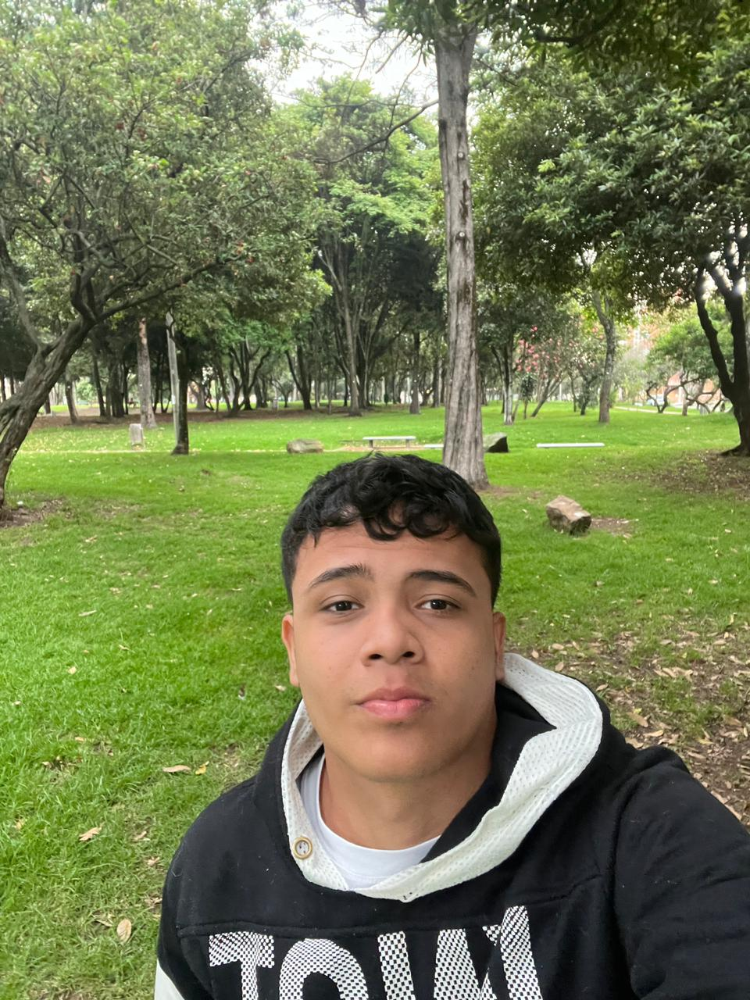

Teléfono:
(318) 62-59574
Correo:
sebastianuribe967@gmail.com
Identificación:
1105677858
Ciudad:
Espinal
Alejandro vargas
(350) 389-1817
Ever augusto
(302) 618-2167
Estudiante de cuarto semestre de ingenieria de software en la universiadad de cundinamarca.
2025 - 2036
Discoteca Tropicolors Espinal
Barterden, mesero, repartidor
2014-2018 Escuela Rondon
Primaria
2018-2023 Colegio Nacional San Isidoro
Secundaria
2024 Universidad dde Cundinamarca
Estudiante de cuarto semestre